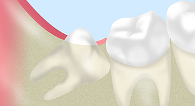
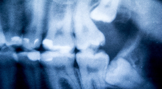
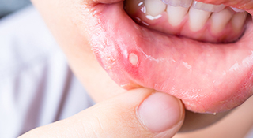
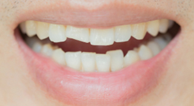
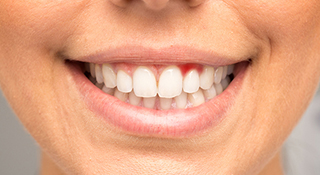

Oral Surgery口腔外科
親しらずなどのトラブル対応～口腔外科～
口腔外科は、お口の中やお口まわりの外科処置を行う診療科です。身近な治療では、親しらずの抜歯がまず挙げられ、ほかにも口内炎の治療や歯の破折などにも対応しています。なお、難症例の場合には基本的に大学病院をご紹介します。専門的な治療は治療器具や設備が整っていて、経験が豊富な医療機関で受けるほうが、患者さんのお体の負担が少ないためです。
お口まわりに気になることがありましたら、まずはお気軽に千葉県南柏の歯医者「さかいね歯科クリニック」にご相談ください。
抜歯をする場合としない場合

親しらずは必ず抜歯するとは限りません。痛みがなく、まわりの歯や噛み合わせに悪影響を与えていない場合には、そのままにしておきます。ただし、歯ぐきに埋まったまま水平な状態でほかの歯を押している場合もありますので、抜歯が必要かどうかは歯科医院で診断する必要があるでしょう。
| 抜歯するケース | そのまま残すケース |
|---|---|
|
|
歯科用CTで抜歯の判断をします

親しらずがまっすぐに生えている場合、抜歯のリスクはほぼありませんが、斜めに生えていたり埋まったままだったりする場合、抜歯の際に血管や神経を傷つける危険性があります。
抜歯の安全性を高めるためには、まず治療計画を立てることが大切。そこで使用するのが、歯科用CTです。顎の骨や親しらずの状態、まわりの血管や神経の位置を立体画像で詳細かつ正確に把握でき、正確な治療計画の立案に役立ちます。
抜歯後の注意点
- 抜歯の際には麻酔をしますので、処置後唇や頰の内側を噛みやすくなります。麻酔が切れるまで注意してください。
- 抜歯後に形成される血液のかたまりは、傷口を保護する役割があります。強いうがいで無理に落とさないでください。
- 抜歯した部位を舌や指で触らないようにしましょう。
- 処方された痛み止めや抗生物質は指示通り服用しましょう。
- 抜歯当日は長時間の入浴や激しい運動、飲酒は控えてください。
そのほかの口腔外科メニュー
口腔内のできもの

口内炎はほとんどの場合しばらく時間が経つと自然治癒していきますが、痛みが続くときやなかなか治らない場合には、外科処置が選択肢に入ります。
外傷

ぶつかったり転んだりして口元に衝撃を受けると、歯が折れたり抜けたりするパターンがあります。そういった場合にも、口腔外科が対応しますので、できるだけ早くご相談ください。
炎症

お口の中の粘膜は、入れ歯などの接触、噛み合わせの不具合などにより炎症を起こすケースがあります。また、細菌や薬剤による刺激でも炎症を起こすことがあるため、その治療を行います。